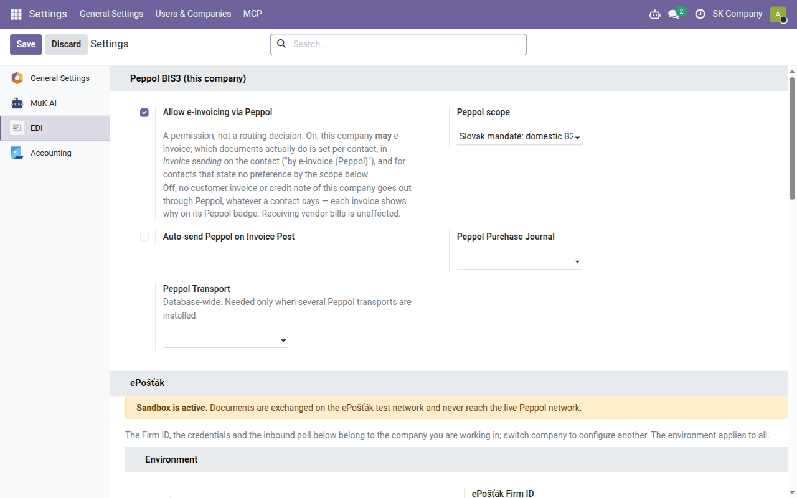

Task guide
E-invoices via Peppol — Data Dance subscribers
For subscribers of the Data Dance hosting service — we connect you to Peppol, with no contract and no keys of your own; Peppol addresses, which invoices go electronically, delivery states and received invoices as drafts.
| Country | Czech Republic and Slovakia |
|---|---|
| Edition | Odoo Community |
| Covers | edi_base, edi_base_peppol, edi_epostak_base, edi_epostak_connector_sapi, edi_epostak_peppol, edi_epostak_broker_client (delivered separately), l10n_sk_ubl_bis3 |
What this guide is for
Peppol is the European network for exchanging e-invoices. An invoice on it is not a PDF but an XML file (Peppol BIS Billing 3.0) that the customer's system reads without retyping. You join the network through an access point and are found on it by your Peppol address.
This guide is for subscribers of the Data Dance hosting service. Data Dance connects you to Peppol through the ePošťák access point: you need no contract with an access point and no keys. If you run Odoo yourself with your own ePošťák contract, see E-invoices via Peppol — your own ePošťák contract.
Slovakia: from 1 January 2027 an e-invoice is mandatory for supplies to a
domestic taxable person (and to a non-taxable legal person established in
Slovakia), except exempt supplies and simplified invoices, and everyone
receiving such invoices must be able to receive them
(§ 85o of the VAT Act). Until the end of 2026
an e-invoice may be sent only with the customer's consent.
Czech Republic: there is no general obligation; an electronic tax document
may be issued only with the customer's consent
(§ 26 of the VAT Act). Details are in
edi_base_peppol.
The connection
Our team switches the connection on — ask us for it. We install the Peppol and ePošťák modules and fill in the Data Dance broker block in Settings → EDI, section ePošťák. Your Odoo then holds no ePošťák credentials; the Data Dance service decides which companies your database may send invoices for. Leave those fields alone — clearing the Broker URL would cut the connection.
You only set what follows: permission, scope and Peppol addresses. Leave Peppol Transport as it is — ePošťák is the only transport.
For a Czech company, talk to us about the connection first.
The Electronic Invoicing → Enable PEPPOL setting in Settings → Accounting is another route into the same network: it registers your company with Odoo S.A. as the access point. A Peppol address can be registered with only one access point; on the hosting service you cannot switch it on, and the Data Dance connection does not need it.
Setup
- Permission. Settings → EDI, block Peppol BIS3 (this company): tick Allow e-invoicing via Peppol and choose the Peppol scope:
- Slovak mandate: domestic B2B and B2G only — the invoices the Slovak mandate covers go electronically, the rest as PDF. Applies to a Slovak company only;
- Any customer with a Peppol address — electronically to everyone who has one. Choose this for a Czech company.
Auto-send Peppol on Invoice Post sends an invoice as soon as it is posted; without it you send it with Send. Peppol Purchase Journal is the journal for received invoices.

- Your company's Peppol address. On the company's contact, Invoicing tab: Peppol e-address (EAS) and Peppol endpoint.
- A Slovak company:
0245and your DIČ (ten digits) — not the IČ DPH and not the IČO. - A Czech company:
9929and your DIČ (for exampleCZ12345678); Odoo fills it in from the DIČ — check it. - Your customers' Peppol addresses in the same place on their contacts, by their country in the same way. Before the first invoice, check that the customer is reachable on the network — see the Peppol address check.
- If a customer should receive invoices otherwise than the scope decides, set Invoice sending on their contact (by e-invoice (Peppol), by email …).
Which invoices go electronically
Every posted customer invoice and credit note shows a badge in its header saying how it will go, and the fields Sent as and Why on its Other Info tab:
| Badge | Meaning |
|---|---|
| Peppol e-invoice | goes via Peppol |
| goes the usual way (email, post) | |
| Peppol, but blocked | should go via Peppol but cannot: your company or the customer has no Peppol address — add it |
Under the Slovak mandate, an invoice to a consumer (a customer with no IČO, DIČ or IČ DPH), to a foreign customer, or one whose lines are all exempt goes as PDF. A sole trader with an IČO is a business, and their invoice goes electronically.

Sending
With auto-send the invoice goes by itself when posted. Otherwise click Send on the invoice: the by e-invoice (Peppol) method is ticked and the XML file is attached. You may email the customer the PDF as well.

Before sending, Odoo checks the file against the EN 16931 and Peppol rules; an invoice with errors does not go and the errors are listed. The invoice stays posted — correct the data and send it again. A delivered invoice is not sent again: it is corrected by a credit note.
States
| Peppol Status | Meaning |
|---|---|
| Ready / Queued | waiting to be sent (the queue runs every 2 minutes; after a temporary outage it retries by itself) |
| Sent | ePošťák accepted the invoice — not yet delivery |
| Done | the invoice is delivered to the customer's access point |
| Error | ePošťák rejected or could not deliver the invoice; the reason is in the message |
Delivery is checked every 30 minutes. Delivery is not the customer's agreement: if their system sends responses, the invoice also shows the Peppol Invoice Response (for example Accepted or Rejected).
Receiving
Invoices your suppliers send to your Peppol address are collected every 30 minutes, and each becomes a draft vendor bill in the Peppol Purchase Journal — supplier, lines, taxes and amounts filled in from the file, the XML attached. The draft is never posted by itself: check the expense accounts and taxes, and post it.
If invoices stop arriving, Settings → EDI → ePošťák shows the Last inbound poll; Poll inbound now collects immediately.
Who may do what
Anyone who may edit an invoice can send it via Peppol — on posting and with Send. The Send via Peppol and Peppol Response… buttons and the Peppol EDI Messages tab are visible to users with the EDI User group. All messages are also in the EDI → Messages app.